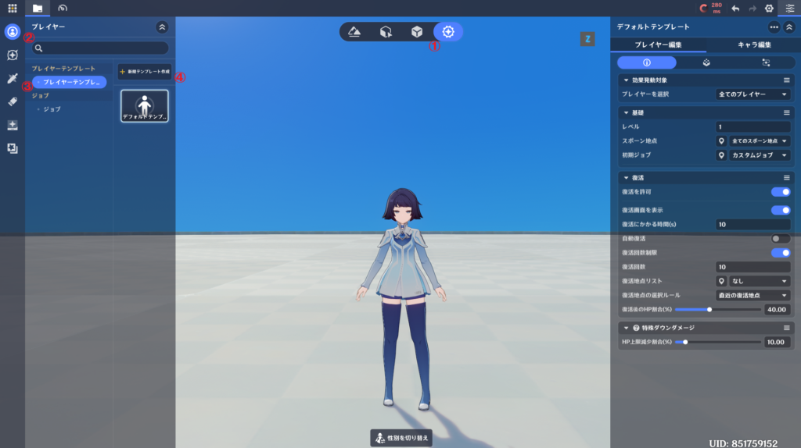
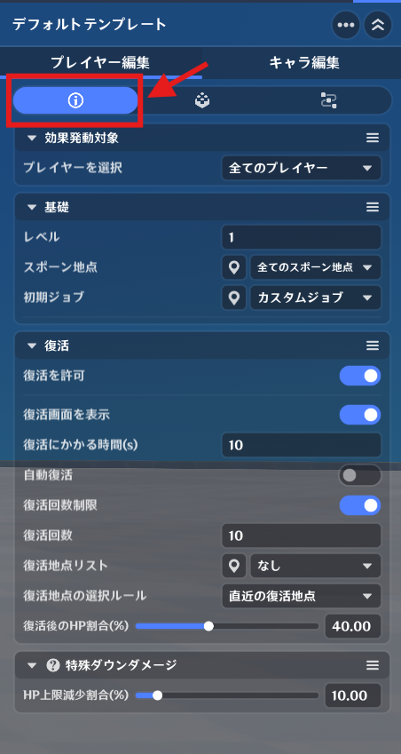
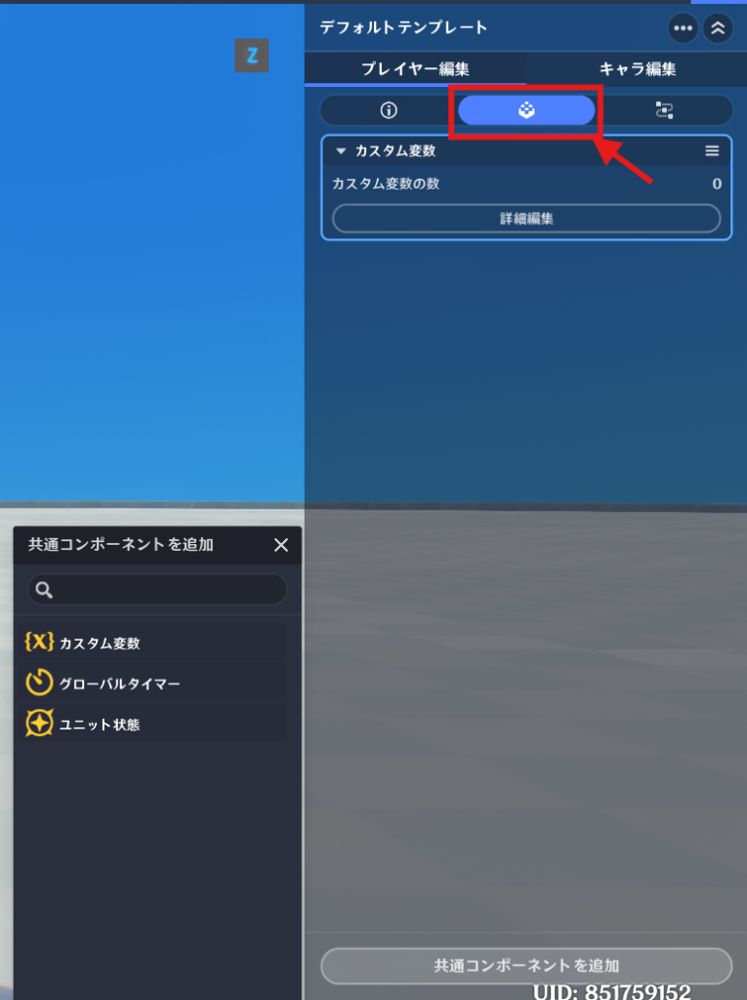
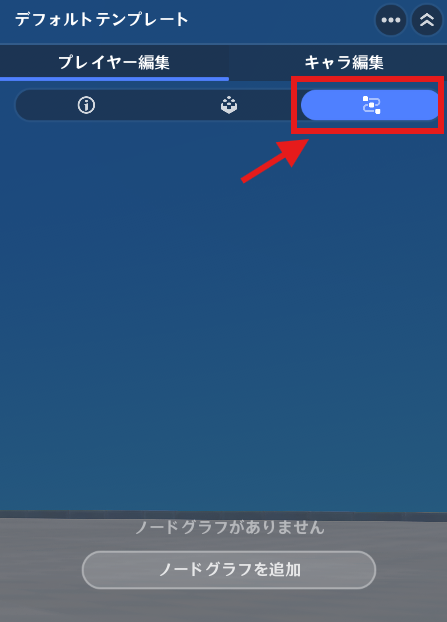
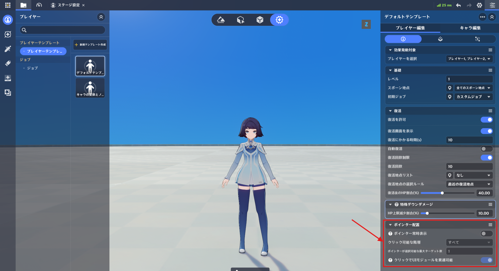
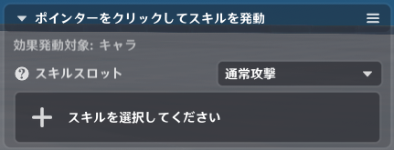

プレイヤー
⭐1.プレイヤーの概念
プレイヤーとは、一般的にゲームでは「操作する人」を意味しますが、原神では「キャラクターの所有者」という意味合いが強いです。この「プレイヤー」という枠組みが、キャラクターをどのように扱うかはゲームのモードによって異なります。
例えば、テイワット世界（クラシックモード）では、1人のプレイヤーという枠の中に、複数のキャラクターを持つことができます。
一方でアドバンスモードでは、1人のプレイヤーに対して、操作できるキャラクターは常に1人です。
⭐2.プレイヤー設定

プレイヤー固有の設定は、プレイヤーテンプレートから設定することができます。
戦闘プリセット(①)タブを開き、サイドバーからプレイヤー(②)を選択、プレイヤーテンプレート(③)をクリックして、「新規テンプレート作成(④)」から新しく作成することができます。
🌸1.基本情報

基本情報タブでは、プレイヤーに関する各種初期設定を行います。
利用可能なスポーン地点の一覧から選択します。
※特殊状況から復活した場合は、復活回数は引かれず、復活の設定にも従いません。
🌸2.共通コンポーネント

共通コンポーネントタブでは、プレイヤーエンティティにアタッチされているコンポーネントの追加・確認を行えます。
プレイヤーで利用できるコンポーネント
🌸3.ノードグラフ

ノードグラフタブでは、プレイヤーエンティティにアタッチされたノードグラフの追加・確認を行います。
プレイヤー固有のロジックを実装できます。
⭐3.実行時の特性
🌸1.物理実体を持たない
プレイヤーエンティティは、純粋なロジック用エンティティです。
つまり、シーン上に存在するオブジェクトではありません。
🌸2.配置情報を持たない
プレイヤーエンティティはステージ上へ直接配置されないため、位置や回転などの配置情報を保持しません。
🌸3.ライフサイクル
プレイヤーエンティティはステージの初期化中に作成され、ステージが破棄されるタイミングで削除されます。
ユーザーが能動的に終了してロビーに戻る時も、プレイヤーエンティティは削除されます。
⭐4.ポインター常時表示
「ポインター常時表示」機能は、主に画面のタップやクリックに関する機能を実装するために使用されます。
🌸1.設定箇所

プレイヤーテンプレート→プレイヤー編集→ポインター配置
🌸2.備考

モバイル端末で「ポインター常時表示」機能を使用する場合、
PC版でマウスクリックによって自動処理される「ターゲット選択の追加ロジック」を補完するために、
ユニット状態の「ポインターをクリックしてスキルを発動」を使用する必要があります。